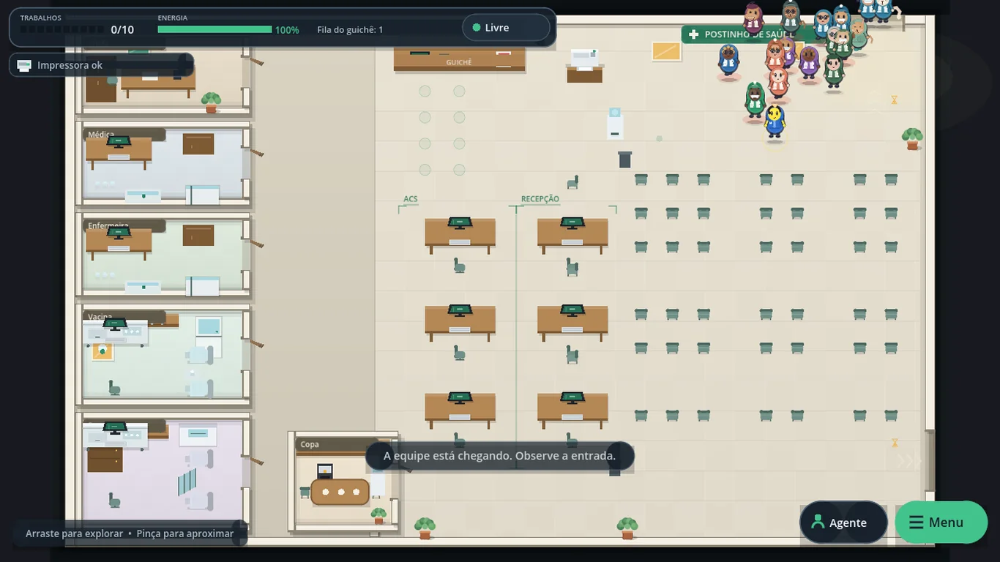
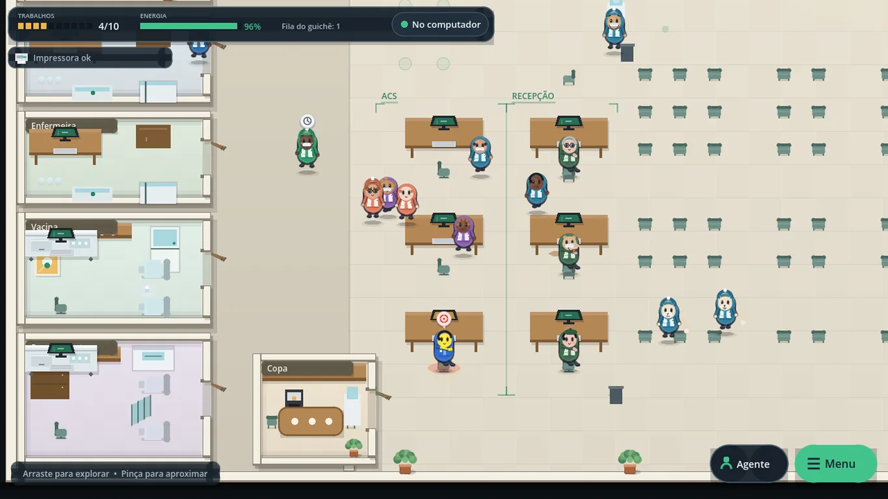
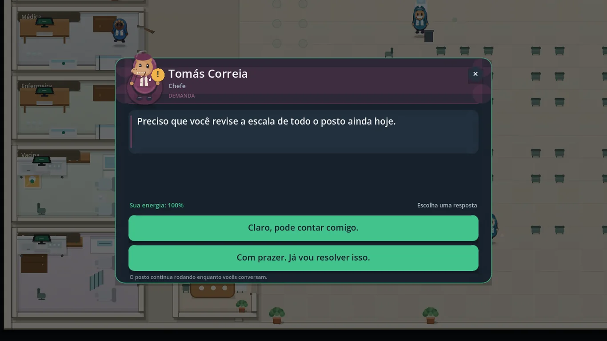
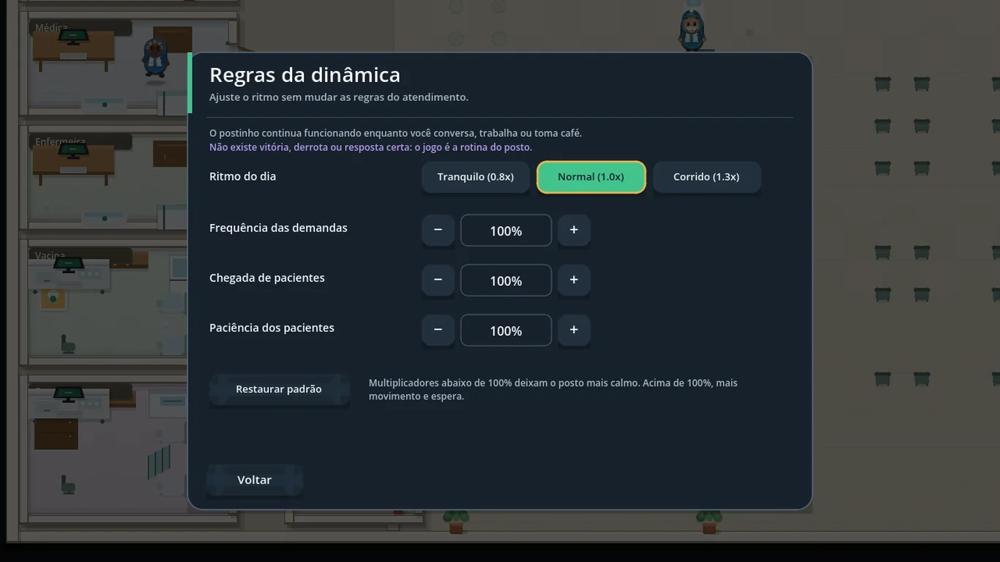
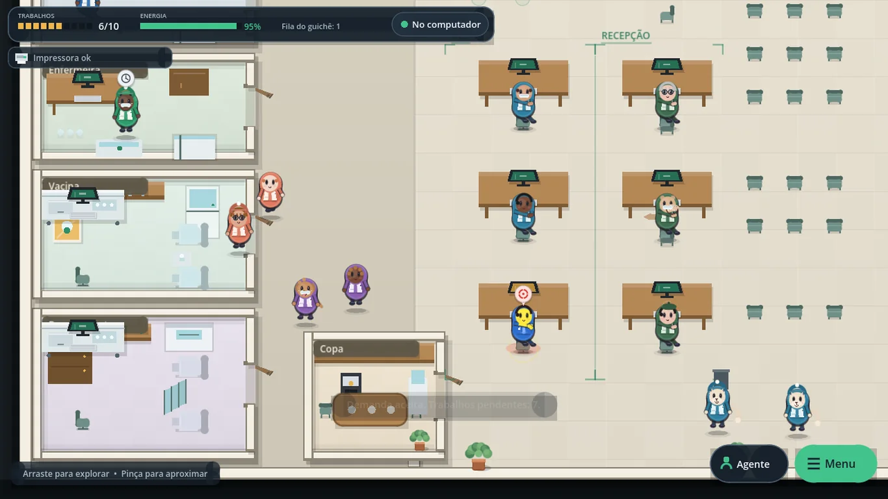
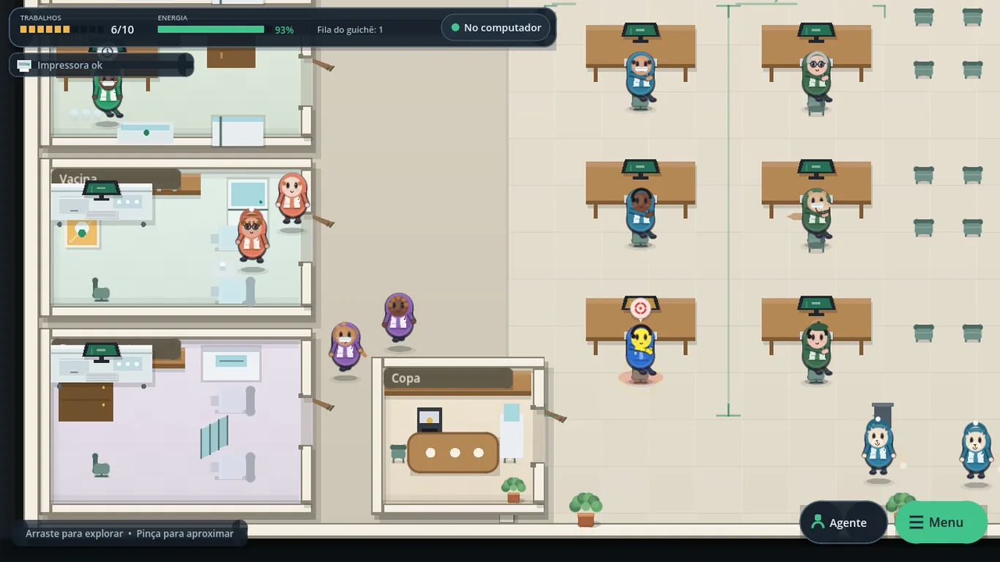

Para quem gosta de simulação
Um dia de trabalho cabe em uma sessão curta. A câmera arrasta e aproxima; o menu ajusta ritmo, demandas, aparência e som.
A rotina do Agente Comunitário de Saúde virou jogo: acolher, escutar, resolver demandas e rir do absurdo — sem prova, sem nota e sem game over.
Android 7+ (arm64) e Windows 10/11 (x64) • salvamento local • nenhum dado real de paciente

Um simulador leve e humorístico da rotina de um ACS dentro de um postinho fictício. Você acompanha o dia, conversa com a equipe, assume demandas, usa os computadores, conserta a impressora, procura pastas de exame e tenta chegar ao fim do expediente com energia — a sua e a do posto.
Um dia de trabalho cabe em uma sessão curta. A câmera arrasta e aproxima; o menu ajusta ritmo, demandas, aparência e som.
Parte da equipe e dos pacientes é animal antropomórfico — e todo mundo é tratado como pessoa normal. Os nomes são fictícios.
Filas, guichê, salas, copa, café, impressora quebrada e conversas que começam no corredor. O exagero é de propósito.
Telas reais do jogo, capturadas no build 1.0.1. Nenhum nome, prontuário ou dado de pessoa real aparece aqui: os personagens e as situações são fictícios.





Não há fórmula de aprovação, nota ou produtividade. O jogo só atualiza o estado fictício do posto com regras abertas — e o resultado é entretenimento e apoio à conversa, nunca prescrição ou avaliação profissional.
trabalho concluído = tempo no PC × 0,3125 × (1 + 0,25 com esforço manual)
energia restante = energia anterior − 0,32 por tarefa (ou + 1,0 por café)
estação de PC = sorteio 40% um interno / 40% uma recepção / 10% um de cada / 10% nenhum
paciência = tolerância sorteada entre 60 e 300 s − tempo de espera e pressão da fila
Entradas: energia (máximo 5), até 10 tarefas pendentes, tempo de simulação, 3 PCs internos, 3 PCs de recepção, 10% de chance de problema leve/grave e a paciência de cada paciente. Nenhuma dessas contas mede competência real nem decide atendimento de verdade.
Você começa com 5 pontos de energia. Cada tarefa custa 0,32 e rende 0,3125 por segundo de trabalho. O esforço manual acelera 25%, mas gasta 25% a mais. Café, conversa e descanso ajudam a continuar.
Pacientes entram pela porta principal, passam pelo guichê, sentam-se ou ficam em pé e esperam atendimento nas salas. A tolerância varia de 60 a 300 segundos. Fila longa e demora aumentam a raiva; paciência esgotada faz a pessoa ir embora.
São 3 PCs internos e 3 de recepção, com distribuição aleatória de estações livres. Cerca de 10% das máquinas apresentam problema leve ou grave. A impressora quebra com frequência; consertos e a busca de pastas usam minijogos de fios e de “onde está a pasta?”.
A chefe, a médica, a enfermeira, a vacina e os procedimentos têm rotinas próprias. A copa é espaço de café e conversa. Diálogos, consertos e exames não pausam o posto: só a tela inicial e o menu param a simulação.
| Item | Detalhe |
|---|---|
| Android | Android 7.0 (API 24) ou superior, arm64-v8a. AAB para Google Play e APK universal para teste. |
| Windows | Windows 10 versão 1809 ou superior / Windows 11, x64. Pacote MSIX com certificado de teste para sideload. |
| Tela | Paisagem. O jogo foi desenhado para 1280×720 e se adapta a telas maiores; em celular, gire o aparelho. |
| Internet | Não é necessária para jogar. Só é usada se você tocar em um link externo (release, e-mail ou documentos). |
| Armazenamento | Save único local (sessao_postinho.dat) e preferências. Desinstalar ou limpar os dados do app apaga o progresso. |
| Limitações | Sem multiplayer, sem nuvem, sem sincronização entre aparelhos e sem versão web jogável nesta entrega. Conteúdo em português do Brasil. |
O jogo não pede login, não coleta dados pessoais, não usa anúncios, analytics ou rastreadores e não envia o seu save para servidor nenhum. O progresso fica no armazenamento local do aparelho.
Os nomes de funcionários, pacientes e crianças são sorteados de listas fictícias. Não há upload, compartilhamento ou sincronização em nuvem. Você pode apagar o progresso desinstalando o app ou limpando os dados do aplicativo.
Nenhum dado pessoal é coletado; o único dado gravado é o progresso fictício da sua partida, no seu aparelho.
A versão publicada é a 1.0.1. Os documentos abaixo valem para esta versão e são atualizados quando o escopo mudar.
Não. É um projeto independente, sem vínculo com governo, prefeitura, SUS, ministério ou órgão público. “Postinho” e “ACS” aparecem como referência ao cotidiano, não como identidade oficial.
Não. As demandas são situações fictícias com duas respostas possíveis. O jogo não avalia conhecimento, não dá nota e não tem resposta certa.
Não. Não há login, analytics, anúncios, câmera, microfone ou localização. O save fica no aparelho e pode ser apagado desinstalando o app ou limpando os dados.
É uma escolha de estilo e humor: parte dos personagens é animal antropomórfico, tratada como pessoa normal. A ideia é lembrar que a comunidade é diversa — e que a rotina já é absurda o suficiente.
Nesta entrega, os pacotes ficam na página Baixar e na área de releases do repositório. A publicação na Google Play e na Microsoft Store depende das contas de loja e ainda está pendente.
Não. Cada aparelho tem um save local único. Não há nuvem, conta ou sincronização nesta versão.
Sim, para uso pessoal, educativo e não comercial, desde que você não o apresente como sistema oficial nem remova os avisos legais. Para uso comercial ou institucional, fale com o desenvolvedor.
Postinho de Saúde is an independent, offline comedy simulation game about the daily routine of a Brazilian Community Health Agent (ACS). You welcome patients, handle requests, use computers, fix the printer, search for exam folders and keep the clinic running — with fictional names, anthropomorphic animal characters and no score, game over or real patient data. Available for Android (7+) and Windows 10/11; progress is stored locally only.